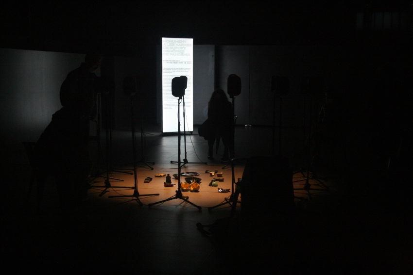
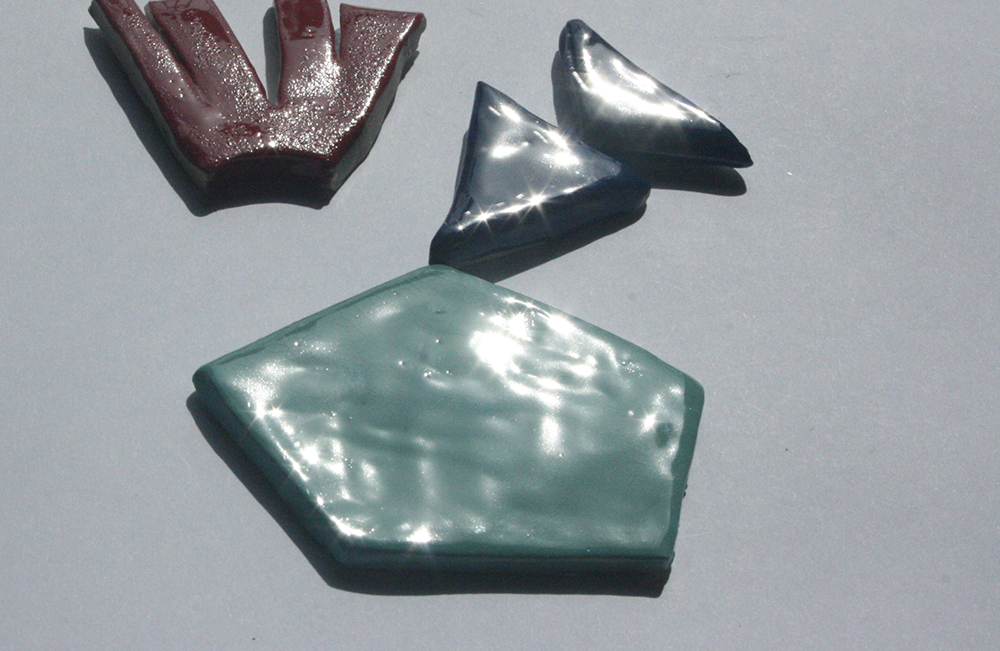

-

Postinternet Queer Reproductive Work & the Fixed Capital of Fertility
This doctoral research project looks at the role of networked and computational technologies (like websites and algorithms) in conditioning notions of “personal reproductive choice” and situates these in a longer history of access to reproductive technologies since the 1970s. The project focuses on the digital "fixed capital" of assisted reproduction and addresses the Internet interface as a space of imagination and memory-making.
The concept of “post-internet queer reproductive work” fuses three scholarly traditions: the study of queer work, theorizations of reproductive labor and the concept of fixed capital. Broadly, the dissertation proposes a reclaiming of the interface, network and viral as themes and modes of artistic response to reproductive governance. The project layers critical, historical, audio-visual and poetic gazes as an artistic research method that centres bodily feeling and political becomings.Research funded by Kone Foundation and book published by Aalto ARTS press.
-

Animation, time-lapse microscopy and reproduction
The Wife of Them All (2022) animation film draws on research around the aesthetic links between time-lapse microscopy, clay animation and ideas of plasticity. Lying at the intersection of science fiction and documentary, the film follows a family based across continents as they critique and move beyond borders, mad bureaucracy and precarious work.
The characters are voiced by (non)actors and actvists including Sabrina Michelle Rivera Sanchez (Coordinator at Sexwork Europe, Amsterdam, and member of Otras Sindicato de Trabajadoras Sexuales Spain); Alejandra Durga Ramos (Former member of Barcelona’s Sindihogar Union of Domestic Workers) and Pratibha Parmar (UK/US artist and filmmaker).
-

Them All Magazine
Them, All Magazine brings together poetry and Net/Software/Code art on the subject of reproductive politics and sexuality.
The project is hosted with Systerserver, a server run by feminists using free and open source software (FOSS). It acts as a place to learn system administration skills, host services and inspire others to do the same.
-

Ceramics & sound
This body of work uses ceramics and sound installation to create collective memories and (anti)monuments to reproductive and care work. An article documents the processes, and addresses some of the anxieties and ambivalences emerging from (anti)monument-building practices.
The projects all depart from Sgraffito - a form of mark-making in ceramics in which a layer of slip is removed to reveal the surface of the clay below. Sgraffito is used to suggest the literal ways in which cultural, scientific and economic "inscription" determine the material forms that institutions (from the institution of the museum to the institutions of memory and perception) take.Monument to Networks of Mutual Aid [Sound and ceramics installation] (El Born CCM, Barcelona, 2020);
Patrimony of Gestures [various actions and performances] (Casa Velazquez; Hangar.org, 2018-2019);
Networks of Care and Critique [ongoing conversation + ceramics project] (2018-present).
-

Artistic responses to public health crisis
I research and write about how other artists, activists and poets have responded to the management of public health crisis, or documented their experiences of reproductive and care work. My curatorial work has focused on HIV/AIDS-related queer video art in the UK during 1980s-1990s. I worked for filmmaker Pratibha Parmar as an archivist and curated "Notes on Visual Justice: Pratibha Parmar’s early work" (LGBT Centre, Barcelona, 2020) and co-curated "Desire and Resistance: Pratibha Parmar" with Tania Adam (at the Reina Sofia Museum, Madrid, 2019).
Image: Reframing Aids (1987), courtesy Pratibha Parmar.
This research has also derived in essays, academic articles, a collective performance and archival research project on "narratives of contagion" from the 19th century to the present, resulting in a a publication and documentary film; and talks.
-

Net Art horizons beyond parody?
I create browser based works that use but also move beyond the parodying of corporate visuality as an aesthetic strategy for critique. How can the Internet interface be taken up to imagine and remember dissident economies, ontologies and biologies of re/production?
See works.